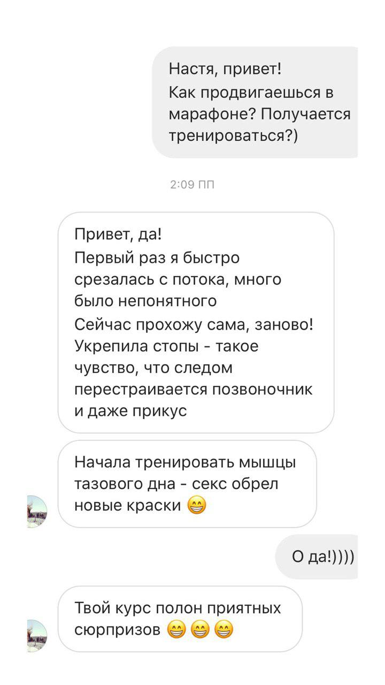
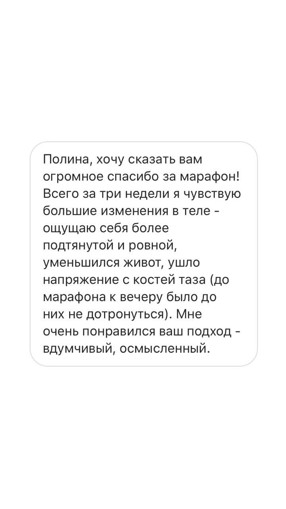
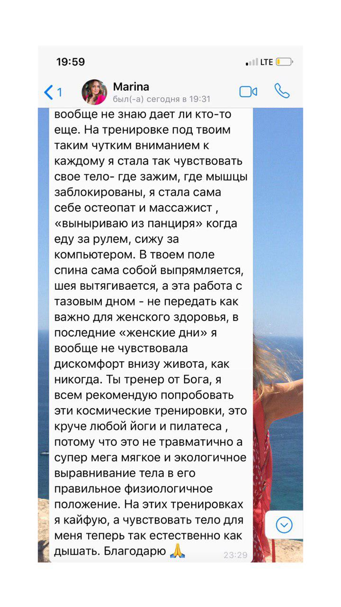
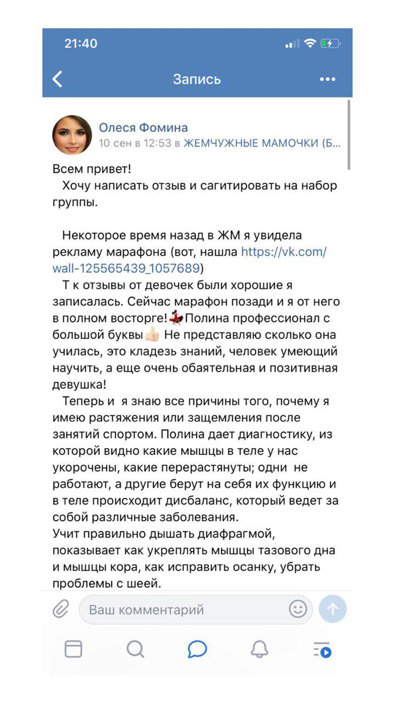
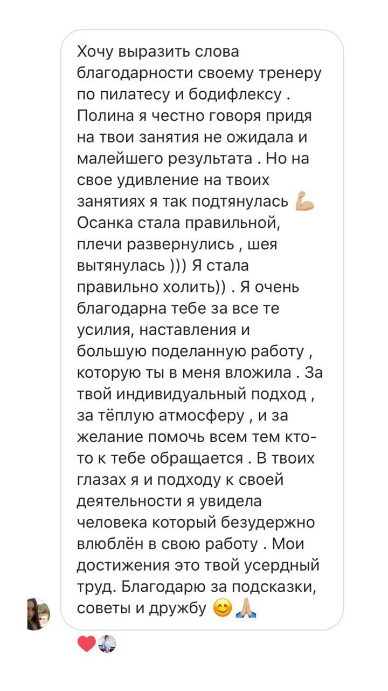
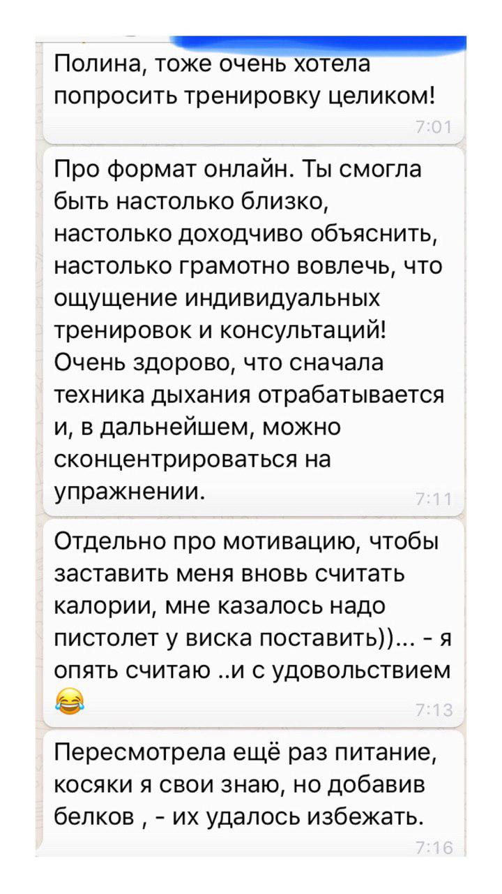

Онлайн-курс по созданию здорового подтянутого тела от стоп до макушки
Доступ к курсу - 90 дней
Я расскажу вам с чего, зачем и в какой последовательности начать, чтобы подтянуть тело и избавиться от боли.
Давайте распрощаемся с травмоопасными упражнениями и отнесёмся к телу по-дружески.
В этом курсе я собрала все необходимые знания и навыки для того, чтобы ваши тренировки были грамотными. Чем бы вы не занимались силовыми, пилатесом или йогой — вам поможет комплексный подход к телу.
Чтобы получить плоский живот, здоровую спину и красивые ягодицы, нужно работать со стопой, диафрагмой, мышцами тазового дна, поперечной мышцей живота и многораздельной мышцей спины.
Пошагово и комплексно — вот мой девиз!
Попробуйте мою программу по созданию нового тела. И получите видимый результат уже через 1 месяц тренировок.
Внимание если у вас:
Я — Полина Матэй.
Сертифицированный тренер по пилатесу и постуральному тренингу — выравнивание позвоночника и работа с глубокой мускулатурой.
Автор фитнес-туров в Тоскану.
Ведущая онлайн-марафонов и групповых программ в Санкт-Петербурге.
В основе моей работы холистический подход к телу.
Участники моих программ знают что, как, зачем, а главное в какой последовательности нужно делать, чтобы чувствовать себя хорошо и выглядеть отлично.
Красота через здоровье!
Умный фитнес подарит вам прежде всего хорошее самочувствие и желание тренироваться регулярно!
Нет
Нет. Можно через 3 месяца после родов. Приходите, будем восстанавливать тело!
Коврик для занятий и теннисный мячик
Да, можно. Где будут запреты, я буду давать замены.
Да, можно. И даже нужно! Работа с дыханием и мышцами тазового дна помогут улучшить состояние.
Где будут запреты, я буду давать замены.
Да, можно.
В фитнесе как в медицине. Специалистов толковых мало. Хотите быть уверены, что тренировка не убъет ваше тазовое дно и поясницу?
Тогда минимальная фитнес грамотность необходима. Наш курс про это.
На групповых занятиях крайне редко заостряют внимание на работе диафрагмы и мышцах кора. На пилатесе — да. Но формат группы не вмещает детальное объяснение и персональную постановку техники. Знания вам пригодятся!
Я педагог в 3м поколении. Объясняю, как дышу.
По опыту предыдущих курсов у всех, кто смотрел и слушал, всё получалось.
Я знаю какие будут ошибки. Во время видео-уроков я говорю на, что нужно обратить внимание, даю обратную связь в общем чате.
Через регулярную работу с собой формируется настоящий контакт с собой.
Фитнес-тренера вы ведь не возьмёте с собой в кармане в обычную жизнь.
В любое удобное для вас время.
Давайте по порядку. Курс, как и марафон, длится 3 недели. У участников курса также есть возможность задавать вопросы в течение первых 3х недель.
Теперь про отличия.
Доступ к курсу открывается после оплаты и сохраняется в течение 90 дней. Каждый может проходить курс в собственном темпе. Возвращаться к заданиям или регулярно делать упражнения, которые открываются в новых днях. Нет прямых эфиров и живого общения в общем чате с другими участниками.
Вишенка на торте🍒⬇️⬇️⬇️
Если дело во времени и мотивации, то открыть курс и сделать несколько упражнений в разы проще. Со временем тело привыкает к регулярным упражнениям и просит добавки.
А так же:
Ваша заявка принята и отправлена на модерацию!
Ваша заявка принята и отправлена на модерацию!